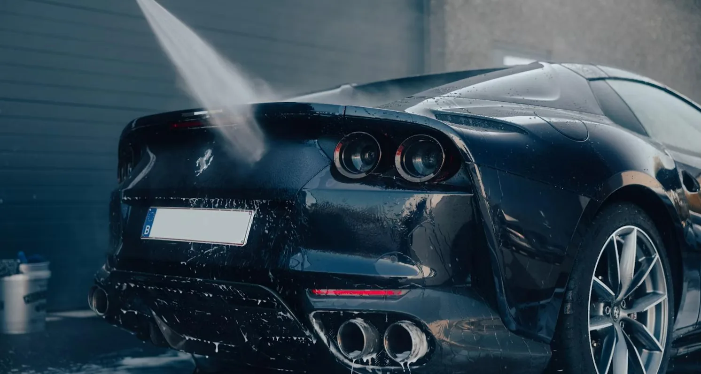

To klikkbare prototyper: kundeflaten og det interne adminpanelet. Alt innhold er ekte — ekte tjenestenavn, ekte priser, ekte avdelinger. Åpne dem side om side med koden mens du implementerer.

Forside, tjenestekatalog, tjeneste-detalj, avdelinger, avdelingsside, om oss, de sju bookingstegene og kundeportalen.
Oversikt, bestillinger med statusflyt, salgsrapport for dag/uke/måned/år per avdeling, tjeneste- og prisredigering, og bloggverktøy.
Prototypene er designreferanser, ikke produksjonskode. De kjører på plain React + Babel i nettleseren uten byggesteg. Bruk dem til å se utseende, tilstander og oppførsel — hent verdiene fra TOKENS.md og COMPONENTS.md.